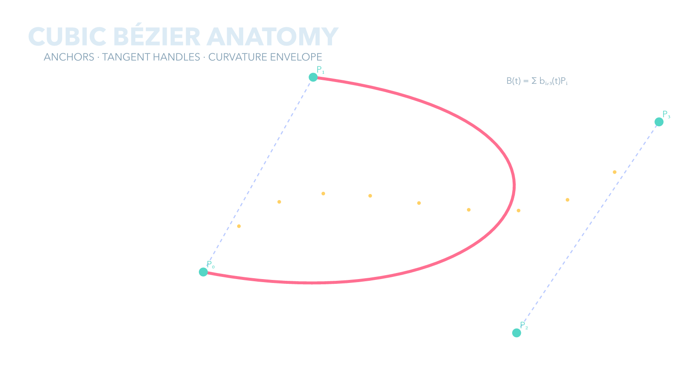

01 · geometry anatomy
Bezier anatomy
How do control handles determine curve shape?
src/bezier_anatomy.typ
#import "@preview/cetz:0.5.2"
#set page(width:auto,height:auto,margin:24pt,fill:none)
#set text(font:"Avenir Next",fill:rgb("#dcebf5"))
#cetz.canvas(length:1.25cm,{ import cetz.draw: *
content((0,7),text(size:22pt,weight:"bold")[CUBIC BÉZIER ANATOMY])
content((0,6.5),text(size:9pt,fill:rgb("#7f9db2"))[ANCHORS · TANGENT HANDLES · CURVATURE ENVELOPE])
let p0=(.5,1.2); let p1=(3.2,6.0); let p2=(8.2,-.3); let p3=(11.7,4.9)
line(p0,p1,stroke:(paint:rgb("#7b9cff88"),dash:"dashed",thickness:1pt)); line(p2,p3,stroke:(paint:rgb("#7b9cff88"),dash:"dashed",thickness:1pt))
bezier(p0,p1,p2,p3,stroke:(paint:rgb("#ff6f91"),thickness:2.6pt))
for item in ((p0,[P₀]),(p1,[P₁]),(p2,[P₂]),(p3,[P₃])) { circle(item.at(0),radius:.11,fill:rgb("#54d6c6"),stroke:none); content((item.at(0).at(0)+.18,item.at(0).at(1)+.18),text(size:8pt,fill:rgb("#54d6c6"))[#item.at(1)]) }
for k in range(1,10) { let t=k/10; let x=(1-t)*(1-t)*(1-t)*p0.at(0)+3*(1-t)*(1-t)*t*p1.at(0)+3*(1-t)*t*t*p2.at(0)+t*t*t*p3.at(0); let y=(1-t)*(1-t)*(1-t)*p0.at(1)+3*(1-t)*(1-t)*t*p1.at(1)+3*(1-t)*t*t*p2.at(1)+t*t*t*p3.at(1); circle((x,y),radius:.045,fill:rgb("#ffd166"),stroke:none) }
content((8.7,5.9),text(size:8pt,fill:rgb("#8ba6b9"))[B(t) = Σ bᵢ,₃(t)Pᵢ])
})